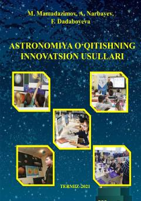

AOMaktablarda astronomiya fanini zamonaviy usullar bilan o'qitish bo'yicha metodik qo'llanma.
Ushbu metodik qo'llanma umumiy o'rta ta'lim maktablarida astronomiya fanini o'qitishda zamonaviy pedagogik texnologiyalar va mediata'limdan foydalanish usullarini yoritadi. Kitobda dars ishlanmalari, o'quvchilarda fazoviy tasavvurni rivojlantirish va fanga qiziqishni oshirish bo'yicha amaliy tavsiyalar keltirilgan.